Alexey Dosovitskiy*,†、Lucas Beyer*、Alexander Kolesnikov*、Dirk Weissenborn*、Xiaohua Zhai*、Thomas Unterthiner、Mostafa Dehghani、Matthias Minderer、Georg Heigold、Sylvain Gelly、Jakob Uszkoreit、Neil Houlsby*,†
*技術的貢献が同等、†指導が同等
Google Research, Brain Team
{adosovitskiy, neilhoulsby}@google.com
arXiv:2010.11929v2 [cs.CV]、2021年6月3日（ICLR 2021 会議論文として発表）
翻訳について：原文 PDF は
02_ViT_2010.11929.pdf（全 22 ページ）。本文、図の説明、図中ラベル、表、脚注、付録を訳出し、論文タイトルと参考文献は原文のまま掲載。図は原図を掲載し、英語ラベルの日本語訳を併記した。数式・数値・引用番号・コードの識別子は原文を維持。原文の記述に関する補足は「訳注」と明示し、本文と区別している。
Transformer アーキテクチャは自然言語処理タスクにおける事実上の標準となったが、コンピュータビジョンへの応用はいまだ限られている。ビジョンにおいては、注意機構は畳み込みネットワークと組み合わせて適用されるか、畳み込みネットワークの全体構造を維持したままその一部の構成要素を置き換えるために用いられている。本論文では、このような CNN への依存は必要なく、画像パッチの系列に直接適用した純粋な Transformer が画像分類タスクにおいて非常に良好な性能を発揮しうることを示す。大量のデータで事前学習し、中規模または小規模の複数の画像認識ベンチマーク（ImageNet、CIFAR-100、VTAB など）に転移すると、Vision Transformer（ViT）は最先端の畳み込みネットワークと比較して優れた結果を達成し、しかも学習に必要な計算資源は大幅に少ない1。
脚注1：ファインチューニングのコードと事前学習済みモデルは https://github.com/google-research/vision_transformer で公開されている。
自己注意に基づくアーキテクチャ、とりわけ Transformer（Vaswani et al., 2017）は、自然言語処理（NLP）において第一選択のモデルとなった。主流のアプローチは、大規模なテキストコーパスで事前学習したのち、より小規模なタスク固有のデータセットでファインチューニングするというものである（Devlin et al., 2019）。Transformer の計算効率とスケーラビリティのおかげで、1000 億（100B）を超えるパラメータを持つ前例のない規模のモデルを学習することが可能になった（Brown et al., 2020; Lepikhin et al., 2020）。モデルとデータセットが大きくなり続けても、性能が飽和する兆しはいまだ見られない。
しかしコンピュータビジョンでは、畳み込みアーキテクチャが依然として支配的である（LeCun et al., 1989; Krizhevsky et al., 2012; He et al., 2016）。NLP での成功に触発され、CNN 的なアーキテクチャと自己注意を組み合わせようとする研究が複数あり（Wang et al., 2018; Carion et al., 2020）、なかには畳み込みを完全に置き換えるものもある（Ramachandran et al., 2019; Wang et al., 2020a）。後者のモデルは理論的には効率的であるものの、特殊な注意パターンを用いるため、現代のハードウェアアクセラレータ上ではまだ効果的にスケールさせられていない。そのため、大規模画像認識においては、古典的な ResNet 型のアーキテクチャが依然として最先端である（Mahajan et al., 2018; Xie et al., 2020; Kolesnikov et al., 2020）。
NLP における Transformer のスケーリングの成功に触発され、我々は標準的な Transformer を、可能な限り少ない変更で画像に直接適用する実験を行う。そのために、画像をパッチに分割し、それらのパッチの線形埋め込みの系列を Transformer への入力として与える。画像パッチは、NLP の応用におけるトークン（単語）と同じように扱われる。モデルは画像分類について教師あり方式で学習する。
強い正則化なしに ImageNet のような中規模データセットで学習すると、これらのモデルは同程度の規模の ResNet より数パーセントポイント低い、控えめな精度にとどまる。この一見期待外れな結果は予想しうるものである。Transformer は、並進同変性や局所性といった CNN に固有の帰納バイアスの一部を欠いており、そのため不十分な量のデータで学習した場合にはうまく汎化しない。
しかし、より大きなデータセット（1400 万〜3 億枚の画像）でモデルを学習すると、状況は一変する。我々は、大規模な学習が帰納バイアスに勝ることを見出した。我々の Vision Transformer（ViT）は、十分な規模で事前学習し、データ点の少ないタスクに転移したときに優れた結果を達成する。公開データセット ImageNet-21k または社内データセット JFT-300M で事前学習すると、ViT は複数の画像認識ベンチマークにおいて最先端に迫るか、それを上回る。特に、最良のモデルは ImageNet で 88.55%、ImageNet-ReaL で 90.72%、CIFAR-100 で 94.55%、19 タスクからなる VTAB スイートで 77.63% の精度に達する。
Transformer は Vaswani et al.（2017）により機械翻訳のために提案され、以来多くの NLP タスクで最先端の手法となっている。大規模な Transformer ベースのモデルは、大規模コーパスで事前学習したのち、対象タスク向けにファインチューニングされることが多い。BERT（Devlin et al., 2019）はノイズ除去型の自己教師あり事前学習タスクを用い、GPT 系の研究は言語モデリングを事前学習タスクとして用いる（Radford et al., 2018; 2019; Brown et al., 2020）。
画像に自己注意を素朴に適用すると、各ピクセルが他のすべてのピクセルに注意を向ける必要がある。ピクセル数の 2 乗のコストがかかるため、これは現実的な入力サイズにはスケールしない。そこで、画像処理の文脈で Transformer を適用するために、これまでいくつかの近似が試みられてきた。Parmar et al.（2018）は、自己注意を大域的にではなく、各クエリピクセルの局所近傍のみに適用した。このような局所的なマルチヘッドのドット積自己注意ブロックは、畳み込みを完全に置き換えることができる（Hu et al., 2019; Ramachandran et al., 2019; Zhao et al., 2020）。別の系統の研究では、Sparse Transformer（Child et al., 2019）が、画像に適用できるよう大域的自己注意に対するスケーラブルな近似を採用している。注意機構をスケールさせる別の方法は、さまざまなサイズのブロック単位で適用することであり（Weissenborn et al., 2019）、極端な場合には個々の軸に沿ってのみ適用する（Ho et al., 2019; Wang et al., 2020a）。こうした特殊な注意アーキテクチャの多くはコンピュータビジョンのタスクで有望な結果を示しているが、ハードウェアアクセラレータ上で効率的に実装するには複雑なエンジニアリングを要する。
我々の研究に最も関連が深いのは Cordonnier et al.（2020）のモデルであり、入力画像からサイズ \(2 \times 2\) のパッチを抽出し、その上で完全な自己注意を適用する。このモデルは ViT と非常によく似ているが、我々の研究はさらに進んで、大規模な事前学習によって素の（vanilla）Transformer が最先端の CNN と競合しうる（あるいはそれを上回りうる）ことを示す。さらに、Cordonnier et al.（2020）は \(2 \times 2\) ピクセルという小さなパッチサイズを用いており、そのためモデルは低解像度の画像にしか適用できないが、我々は中解像度の画像も扱う。
畳み込みニューラルネットワーク（CNN）を何らかの形の自己注意と組み合わせることにも多くの関心が寄せられてきた。例えば、画像分類のために特徴マップを拡張するもの（Bello et al., 2019）や、CNN の出力を自己注意でさらに処理するもの、例えば物体検出（Hu et al., 2018; Carion et al., 2020）、動画処理（Wang et al., 2018; Sun et al., 2019）、画像分類（Wu et al., 2020）、教師なし物体発見（Locatello et al., 2020）、テキストとビジョンの統合タスク（Chen et al., 2020c; Lu et al., 2019; Li et al., 2019）などである。
最近の関連モデルとしてもう一つ、image GPT（iGPT）（Chen et al., 2020a）がある。これは画像の解像度と色空間を縮小したうえで、画像ピクセルに Transformer を適用するものである。このモデルは生成モデルとして教師なし方式で学習され、得られた表現をファインチューニングするか線形プロービングすることで分類性能を評価でき、ImageNet で最大 72% の精度を達成している。
我々の研究は、標準的な ImageNet データセットよりも大きな規模での画像認識を探究する論文群に新たに加わるものである。追加のデータソースを用いることで、標準的なベンチマークで最先端の結果を達成できる（Mahajan et al., 2018; Touvron et al., 2019; Xie et al., 2020）。さらに、Sun et al.（2017）は CNN の性能がデータセットのサイズに応じてどのようにスケールするかを調べ、Kolesnikov et al.（2020）および Djolonga et al.（2020）は ImageNet-21k や JFT-300M のような大規模データセットからの CNN の転移学習を実証的に探究している。我々もこれら後者の 2 つのデータセットに注目するが、先行研究で用いられた ResNet ベースのモデルの代わりに Transformer を学習する。
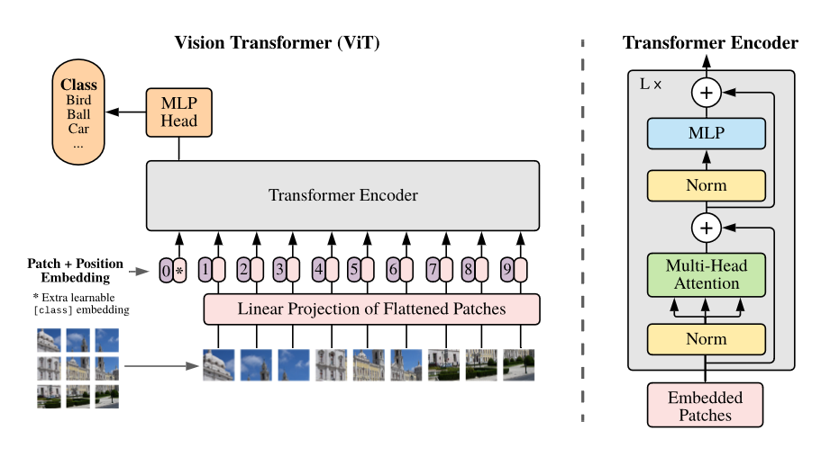
図1：モデルの概要。画像を固定サイズのパッチに分割し、それぞれを線形に埋め込み、位置埋め込みを加え、得られたベクトルの系列を標準的な Transformer エンコーダに入力する。分類を行うために、学習可能な追加の「分類トークン」を系列に加えるという標準的なアプローチを用いる。Transformer エンコーダの図は Vaswani et al.（2017）に着想を得たものである。
図中ラベル：Vision Transformer (ViT)＝Vision Transformer（ViT）、Class＝クラス、Bird＝鳥、Ball＝ボール、Car＝車、MLP Head＝MLP ヘッド、Transformer Encoder＝Transformer エンコーダ、Patch + Position Embedding＝パッチ＋位置埋め込み、* Extra learnable [class] embedding＝* 学習可能な追加の [class] 埋め込み、Linear Projection of Flattened Patches＝平坦化したパッチの線形射影、L ×＝L 回繰り返し、Norm＝正規化、Multi-Head Attention＝マルチヘッド注意、Embedded Patches＝埋め込まれたパッチ
モデル設計においては、オリジナルの Transformer（Vaswani et al., 2017）に可能な限り忠実に従う。この意図的に単純な構成の利点は、スケーラブルな NLP 向け Transformer アーキテクチャ（およびその効率的な実装）をほぼそのまま利用できることである。
モデルの概要を図1に示す。標準的な Transformer は、トークン埋め込みの 1 次元系列を入力として受け取る。2 次元画像を扱うために、画像 \(\mathbf{x} \in \mathbb{R}^{H \times W \times C}\) を、平坦化した 2 次元パッチの系列 \(\mathbf{x}_p \in \mathbb{R}^{N \times (P^2 \cdot C)}\) に変形する。ここで \((H, W)\) は元画像の解像度、\(C\) はチャネル数、\((P, P)\) は各画像パッチの解像度であり、\(N = HW/P^2\) は得られるパッチの数で、これは Transformer に対する実効的な入力系列長にもなる。Transformer はすべての層を通じて一定の潜在ベクトルサイズ \(D\) を用いるので、パッチを平坦化し、学習可能な線形射影によって \(D\) 次元に写像する（式 1）。この射影の出力をパッチ埋め込みと呼ぶ。
BERT の [class] トークンと同様に、埋め込まれたパッチの系列の先頭に学習可能な埋め込みを付加し（\(\mathbf{z}_0^0 = \mathbf{x}_\text{class}\)）、Transformer エンコーダの出力におけるその状態（\(\mathbf{z}_L^0\)）を画像表現 \(\mathbf{y}\) とする（式 4）。事前学習時とファインチューニング時のいずれにおいても、\(\mathbf{z}_L^0\) には分類ヘッドが接続される。分類ヘッドは、事前学習時には 1 つの隠れ層を持つ MLP で、ファインチューニング時には単一の線形層で実装される。
位置情報を保持するために、パッチ埋め込みに位置埋め込みを加える。より高度な 2 次元を考慮した位置埋め込みを用いても有意な性能向上は見られなかったため（付録 D.4）、標準的な学習可能な 1 次元位置埋め込みを用いる。得られた埋め込みベクトルの系列がエンコーダへの入力となる。
Transformer エンコーダ（Vaswani et al., 2017）は、マルチヘッド自己注意（MSA、付録 A を参照）と MLP ブロック（式 2、3）が交互に重なった層からなる。各ブロックの前にはレイヤー正規化（Layernorm、LN）が適用され、各ブロックの後には残差接続が置かれる（Wang et al., 2019; Baevski & Auli, 2019）。MLP は GELU 非線形性を伴う 2 つの層を含む。
\[ \mathbf{z}_0 = [\mathbf{x}_\text{class};\, \mathbf{x}^1_p \mathbf{E};\, \mathbf{x}^2_p \mathbf{E};\, \cdots;\, \mathbf{x}^N_p \mathbf{E}] + \mathbf{E}_{pos}, \qquad \mathbf{E} \in \mathbb{R}^{(P^2 \cdot C) \times D},\ \mathbf{E}_{pos} \in \mathbb{R}^{(N+1) \times D} \tag{1} \]
\[ \mathbf{z'}_\ell = \mathrm{MSA}(\mathrm{LN}(\mathbf{z}_{\ell-1})) + \mathbf{z}_{\ell-1}, \qquad \ell = 1 \ldots L \tag{2} \]
\[ \mathbf{z}_\ell = \mathrm{MLP}(\mathrm{LN}(\mathbf{z'}_\ell)) + \mathbf{z'}_\ell, \qquad \ell = 1 \ldots L \tag{3} \]
\[ \mathbf{y} = \mathrm{LN}(\mathbf{z}_L^0) \tag{4} \]
帰納バイアス。Vision Transformer は CNN と比べて、画像に特有の帰納バイアスがはるかに少ないことに注意されたい。CNN では、局所性、2 次元の近傍構造、および並進同変性が、モデル全体を通じて各層に組み込まれている。ViT では、MLP 層のみが局所的かつ並進同変であり、自己注意層は大域的である。2 次元の近傍構造はごく控えめにしか用いられない。すなわち、モデルの冒頭で画像をパッチに切り分ける際と、ファインチューニング時に異なる解像度の画像に合わせて位置埋め込みを調整する際（後述）だけである。それ以外では、初期化時の位置埋め込みはパッチの 2 次元位置に関する情報を一切持たず、パッチ間のすべての空間的関係をゼロから学習しなければならない。
ハイブリッドアーキテクチャ。生の画像パッチの代わりに、CNN（LeCun et al., 1989）の特徴マップから入力系列を構成することもできる。このハイブリッドモデルでは、パッチ埋め込みの射影 \(\mathbf{E}\)（式 1）を、CNN の特徴マップから抽出したパッチに適用する。特別な場合として、パッチの空間サイズを 1x1 とすることもでき、これは特徴マップの空間次元を単に平坦化して Transformer の次元へ射影することで入力系列を得ることを意味する。分類用の入力埋め込みと位置埋め込みは、上述のとおりに加える。
通常、ViT は大規模データセットで事前学習し、（より小規模な）下流タスクへファインチューニングする。そのために、事前学習済みの予測ヘッドを取り除き、ゼロ初期化した \(D \times K\) のフィードフォワード層を取り付ける。ここで \(K\) は下流タスクのクラス数である。事前学習時よりも高い解像度でファインチューニングすると有益であることが多い（Touvron et al., 2019; Kolesnikov et al., 2020）。より高解像度の画像を入力する際、パッチサイズは同じに保つので、実効的な系列長は長くなる。Vision Transformer は（メモリの制約の範囲内で）任意の系列長を扱えるが、事前学習済みの位置埋め込みはもはや意味をなさない可能性がある。そこで、元画像における位置に従って、事前学習済みの位置埋め込みを 2 次元補間する。この解像度調整とパッチ抽出が、画像の 2 次元構造に関する帰納バイアスを Vision Transformer に手作業で注入する唯一の箇所であることに注意されたい。
ResNet、Vision Transformer（ViT）、およびハイブリッドの表現学習能力を評価する。各モデルのデータ要件を理解するために、さまざまなサイズのデータセットで事前学習し、多数のベンチマークタスクで評価する。モデルの事前学習の計算コストを考慮すると、ViT は非常に良好な成績を示し、より低い事前学習コストでほとんどの認識ベンチマークにおいて最先端を達成する。最後に、自己教師ありを用いた小規模な実験を行い、自己教師あり ViT が将来有望であることを示す。
データセット。モデルのスケーラビリティを探るため、1k クラス・130 万枚の画像からなる ILSVRC-2012 ImageNet データセット（以下では ImageNet と呼ぶ）、その上位集合で 21k クラス・1400 万枚の画像からなる ImageNet-21k（Deng et al., 2009）、および 18k クラス・3 億 300 万枚の高解像度画像からなる JFT（Sun et al., 2017）を用いる。Kolesnikov et al.（2020）に従い、下流タスクのテストセットに関して事前学習データセットの重複除去を行う。これらのデータセットで学習したモデルを、いくつかのベンチマークタスクに転移する。すなわち、元の検証ラベルおよびクリーニング済みの ReaL ラベル（Beyer et al., 2020）による ImageNet、CIFAR-10/100（Krizhevsky, 2009）、Oxford-IIIT Pets（Parkhi et al., 2012）、Oxford Flowers-102（Nilsback & Zisserman, 2008）である。これらのデータセットに対する前処理は Kolesnikov et al.（2020）に従う。
| モデル | 層数 | 隠れ層サイズ \(D\) | MLP サイズ | ヘッド数 | パラメータ数 |
|---|---|---|---|---|---|
| ViT-Base | 12 | 768 | 3072 | 12 | 86M |
| ViT-Large | 24 | 1024 | 4096 | 16 | 307M |
| ViT-Huge | 32 | 1280 | 5120 | 16 | 632M |
表1：Vision Transformer のモデルバリエーションの詳細。
19 タスクからなる VTAB 分類スイート（Zhai et al., 2019b）でも評価する。VTAB は、タスクごとに 1 000 個の訓練例を用いて、多様なタスクへの少データ転移を評価する。タスクは 3 つのグループに分けられる。Natural（自然画像）は上記のような Pets、CIFAR などのタスク、Specialized（専門画像）は医療画像や衛星画像、Structured（構造理解）は位置特定のような幾何学的理解を要するタスクである。
モデルバリエーション。ViT の構成は、表1にまとめたとおり、BERT（Devlin et al., 2019）で用いられた構成に基づく。「Base」と「Large」のモデルは BERT からそのまま採用し、さらに大きな「Huge」モデルを追加した。以下では、モデルサイズと入力パッチサイズを示すために簡略表記を用いる。例えば ViT-L/16 は、入力パッチサイズが \(16 \times 16\) の「Large」バリエーションを意味する。Transformer の系列長はパッチサイズの 2 乗に反比例するため、パッチサイズが小さいモデルほど計算コストが高くなることに注意されたい。
ベースラインの CNN としては ResNet（He et al., 2016）を用いるが、バッチ正規化（Batch Normalization）層（Ioffe & Szegedy, 2015）をグループ正規化（Group Normalization）（Wu & He, 2018）に置き換え、標準化畳み込み（standardized convolutions）（Qiao et al., 2019）を用いた。これらの変更は転移性能を向上させ（Kolesnikov et al., 2020）、変更したモデルを「ResNet (BiT)」と表記する。ハイブリッドでは、中間特徴マップを、パッチサイズを 1「ピクセル」とした ViT に入力する。異なる系列長で実験するために、(i) 通常の ResNet50 のステージ 4 の出力を用いるか、(ii) ステージ 4 を取り除き、同じ数の層をステージ 3 に配置して（総層数を維持して）、この拡張したステージ 3 の出力を用いる。選択肢 (ii) では系列長が 4 倍になり、ViT モデルの計算コストが高くなる。
学習とファインチューニング。ResNet を含むすべてのモデルを、Adam（Kingma & Ba, 2015）を \(\beta_1 = 0.9\)、\(\beta_2 = 0.999\) で用い、バッチサイズ 4096 で学習し、0.1 という大きな重み減衰を適用する。これはすべてのモデルの転移に有用であることがわかった（付録 D.1 では、一般的な慣行とは対照的に、我々の設定では ResNet に対して Adam が SGD よりわずかに良好に機能することを示している）。線形の学習率ウォームアップと減衰を用いる。詳細は付録 B.1 を参照のこと。ファインチューニングには、すべてのモデルでモーメンタム付き SGD をバッチサイズ 512 で用いる（付録 B.1.1 を参照）。表2の ImageNet の結果については、より高い解像度（ViT-L/16 では 512、ViT-H/14 では 518）でファインチューニングし、さらに係数 0.9999 の Polyak & Juditsky（1992）平均化（Ramachandran et al., 2019; Wang et al., 2020b）も用いた。
評価指標。下流データセットでの結果は、少数ショット精度またはファインチューニング精度のいずれかで報告する。ファインチューニング精度は、各モデルをそれぞれのデータセットでファインチューニングした後の性能を表す。少数ショット精度は、訓練画像の部分集合の（固定された）表現を \(\{-1, 1\}^K\) の目標ベクトルに写像する正則化付き最小二乗回帰問題を解くことで得られる。この定式化により、厳密解を閉形式で求めることができる。主にファインチューニング性能に注目するが、ファインチューニングのコストが高すぎる場合には、迅速なその場での評価のために線形少数ショット精度を用いることもある。
まず、我々の最大のモデルである ViT-H/14 と ViT-L/16 を、文献にある最先端の CNN と比較する。第一の比較対象は Big Transfer（BiT）（Kolesnikov et al., 2020）であり、大規模な ResNet による教師あり転移学習を行う。第二は Noisy Student（Xie et al., 2020）であり、ラベルを取り除いた ImageNet と JFT-300M を用いて半教師あり学習で学習された大規模な EfficientNet である。現在、ImageNet では Noisy Student が、ここで報告するその他のデータセットでは BiT-L が最先端である。すべてのモデルは TPUv3 ハードウェア上で学習しており、それぞれの事前学習に要した TPUv3 コア日数、すなわち学習に用いた TPU v3 コア数（チップあたり 2 コア）に学習時間（日数）を掛けたものを報告する。
| Ours-JFT (ViT-H/14) | Ours-JFT (ViT-L/16) | Ours-I21k (ViT-L/16) | BiT-L (ResNet152x4) | Noisy Student (EfficientNet-L2) | |
|---|---|---|---|---|---|
| ImageNet | 88.55 ± 0.04 | 87.76 ± 0.03 | 85.30 ± 0.02 | 87.54 ± 0.02 | 88.4/88.5* |
| ImageNet ReaL | 90.72 ± 0.05 | 90.54 ± 0.03 | 88.62 ± 0.05 | 90.54 | 90.55 |
| CIFAR-10 | 99.50 ± 0.06 | 99.42 ± 0.03 | 99.15 ± 0.03 | 99.37 ± 0.06 | − |
| CIFAR-100 | 94.55 ± 0.04 | 93.90 ± 0.05 | 93.25 ± 0.05 | 93.51 ± 0.08 | − |
| Oxford-IIIT Pets | 97.56 ± 0.03 | 97.32 ± 0.11 | 94.67 ± 0.15 | 96.62 ± 0.23 | − |
| Oxford Flowers-102 | 99.68 ± 0.02 | 99.74 ± 0.00 | 99.61 ± 0.02 | 99.63 ± 0.03 | − |
| VTAB (19 tasks) | 77.63 ± 0.23 | 76.28 ± 0.46 | 72.72 ± 0.21 | 76.29 ± 1.70 | − |
| TPUv3-core-days | 2.5k | 0.68k | 0.23k | 9.9k | 12.3k |
表2：一般的な画像分類ベンチマークにおける最先端との比較。3 回のファインチューニング実行で平均した精度の平均と標準偏差を報告する。JFT-300M データセットで事前学習した Vision Transformer モデルは、すべてのデータセットで ResNet ベースのベースラインを上回り、しかも事前学習に要する計算資源は大幅に少ない。より小規模な公開データセット ImageNet-21k で事前学習した ViT も良好な性能を示す。*Touvron et al.（2020）では、わずかに改善された 88.5% の結果が報告されている。
表中ラベル：Ours＝本研究、VTAB (19 tasks)＝VTAB（19 タスク）、TPUv3-core-days＝TPUv3 コア日数
結果を表2に示す。JFT-300M で事前学習したより小さな ViT-L/16 モデルは、（同じデータセットで事前学習された）BiT-L をすべてのタスクで上回り、しかも学習に要する計算資源は大幅に少ない。より大きなモデルである ViT-H/14 は、特により難しいデータセット、すなわち ImageNet、CIFAR-100、および VTAB スイートで性能をさらに向上させる。興味深いことに、このモデルも事前学習に要した計算量は従来の最先端よりも大幅に少ない。ただし、事前学習の効率はアーキテクチャの選択だけでなく、学習スケジュール、オプティマイザ、重み減衰などの他のパラメータにも影響されうることに注意されたい。異なるアーキテクチャについての性能対計算量の統制された研究は 4.4 節で示す。最後に、公開データセット ImageNet-21k で事前学習した ViT-L/16 モデルも、ほとんどのデータセットで良好な性能を示しつつ、事前学習に要する資源はより少ない。8 コアの標準的なクラウド TPUv3 を用いて約 30 日で学習できる。
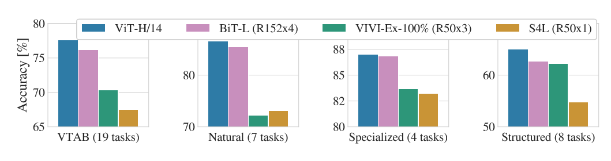
図2：Natural、Specialized、Structured の各タスクグループにおける VTAB 性能の内訳。
図中ラベル：Accuracy [%]＝精度 [%]、VTAB (19 tasks)＝VTAB（19 タスク）、Natural (7 tasks)＝Natural（7 タスク）、Specialized (4 tasks)＝Specialized（4 タスク）、Structured (8 tasks)＝Structured（8 タスク）
図2は、VTAB のタスクをそれぞれのグループに分解し、このベンチマークにおける従来の最先端（SOTA）手法と比較したものである。比較対象は BiT、VIVI（ImageNet と Youtube で共同学習した ResNet）（Tschannen et al., 2020）、および S4L（ImageNet 上での教師あり学習と半教師あり学習の併用）（Zhai et al., 2019a）である。ViT-H/14 は、Natural と Structured のタスクで BiT-R152x4 およびその他の手法を上回る。Specialized では、上位 2 モデルの性能は同程度である。
Vision Transformer は、大規模な JFT-300M データセットで事前学習した場合に良好な性能を示す。ResNet よりもビジョンに関する帰納バイアスが少ない中で、データセットのサイズはどれほど決定的なのだろうか。我々は 2 系列の実験を行う。
第一に、ViT モデルを、サイズが大きくなっていくデータセット、すなわち ImageNet、ImageNet-21k、JFT-300M で事前学習する。より小さなデータセットでの性能を高めるために、3 つの基本的な正則化パラメータ、すなわち重み減衰、ドロップアウト、ラベル平滑化を最適化する。図3は、ImageNet へのファインチューニング後の結果を示す（他のデータセットでの結果は表5に示す）2。最小のデータセットである ImageNet で事前学習した場合、（適度な）正則化を施しても、ViT-Large モデルは ViT-Base モデルに劣る。ImageNet-21k で事前学習すると、両者の性能は同程度になる。JFT-300M で初めて、より大きなモデルの恩恵が完全に得られる。図3には、異なるサイズの BiT モデルが張る性能領域も示している。BiT の CNN は ImageNet では ViT を上回るが、より大きなデータセットでは ViT が追い抜く。
脚注2：ImageNet で事前学習したモデルもファインチューニングしているが、それも ImageNet 上で行っていることに注意されたい。これは、ファインチューニング時の解像度の引き上げによって性能が向上するためである。
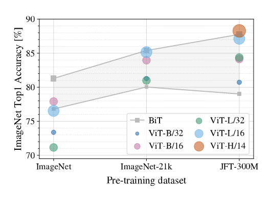
図3：ImageNet への転移。大きな ViT モデルは、小さなデータセットで事前学習した場合には BiT の ResNet（網掛け領域）より性能が劣るが、より大きなデータセットで事前学習すると真価を発揮する。同様に、データセットが大きくなるにつれて、より大きな ViT バリエーションがより小さなものを追い抜く。
図中ラベル：ImageNet Top1 Accuracy [%]＝ImageNet Top1 精度 [%]、Pre-training dataset＝事前学習データセット
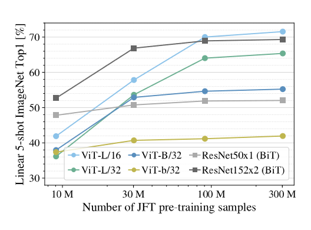
図4：ImageNet における線形少数ショット評価と事前学習サイズの関係。ResNet はより小さな事前学習データセットでは良好な性能を示すが、ViT より早く頭打ちになる。一方 ViT は、より大規模な事前学習でより良好な性能を示す。ViT-b は、ViT-B のすべての隠れ次元を半分にしたものである。
図中ラベル：Linear 5-shot ImageNet Top1 [%]＝線形 5 ショット ImageNet Top1 [%]、Number of JFT pre-training samples＝JFT 事前学習サンプル数
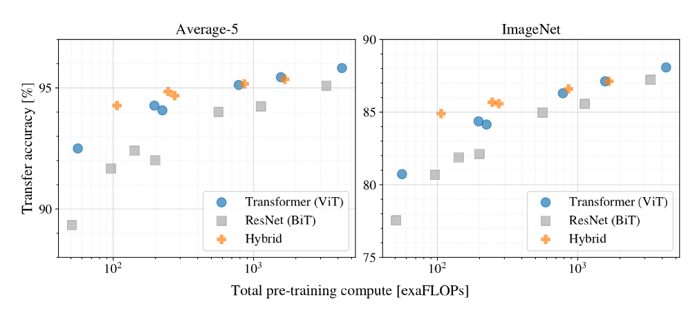
図5：異なるアーキテクチャ（Vision Transformer、ResNet、ハイブリッド）における性能と事前学習計算量の関係。Vision Transformer は、同じ計算予算のもとでは概して ResNet を上回る。ハイブリッドは、モデルサイズが小さい場合には純粋な Transformer を改善するが、より大きなモデルではその差は消失する。
図中ラベル：Average-5＝5 データセット平均、Transfer accuracy [%]＝転移精度 [%]、Total pre-training compute [exaFLOPs]＝事前学習の総計算量 [exaFLOPs]、Hybrid＝ハイブリッド
第二に、JFT-300M 全体に加えて、9M、30M、90M のランダムな部分集合でモデルを学習する。より小さな部分集合に対して追加の正則化は行わず、すべての設定で同じハイパーパラメータを用いる。これにより、正則化の効果ではなく、モデル本来の特性を評価する。ただし早期終了は用い、学習中に達成された最良の検証精度を報告する。計算量を節約するため、完全なファインチューニング精度の代わりに少数ショット線形精度を報告する。結果を図4に示す。小さなデータセットでは、Vision Transformer は同程度の計算コストの ResNet よりも過学習しやすい。例えば、ViT-B/32 は ResNet50 よりわずかに高速であるが、9M の部分集合でははるかに性能が劣る一方、90M 以上の部分集合ではより良好な性能を示す。同じことが ResNet152x2 と ViT-L/16 についても成り立つ。この結果は、畳み込みの帰納バイアスは小さなデータセットでは有用であるが、より大きなデータセットでは関連するパターンをデータから直接学習することで十分であり、むしろ有益でさえあるという直観を裏付ける。（訳注：本文の 9M、30M、90M に対し、図4の横軸目盛りは 10 M、30 M、100 M、300 M と表記されている。）
全体として、ImageNet での少数ショットの結果（図4）および VTAB での少データの結果（表2）は、きわめて少ないデータでの転移にとって有望であるように見える。ViT の少数ショット特性のさらなる分析は、今後の研究の興味深い方向性である。
JFT-300M からの転移性能を評価することで、さまざまなモデルについて統制されたスケーリングの研究を行う。この設定ではデータサイズがモデルの性能のボトルネックにならず、各モデルの性能と事前学習コストの関係を評価する。モデル群は次のとおりである。7 個の ResNet：7 エポック事前学習した R50x1、R50x2、R101x1、R152x1、R152x2、および 14 エポック事前学習した R152x2 と R200x3。6 個の Vision Transformer：7 エポック事前学習した ViT-B/32、B/16、L/32、L/16、および 14 エポック事前学習した L/16 と H/14。5 個のハイブリッド：7 エポック事前学習した R50+ViT-B/32、B/16、L/32、L/16、および 14 エポック事前学習した R50+ViT-L/16（ハイブリッドでは、モデル名の末尾の数字はパッチサイズではなく、ResNet バックボーンにおける総ダウンサンプリング率を表す）。
図5は、転移性能と事前学習の総計算量の関係を示す（計算コストの詳細は付録 D.5 を参照）。モデルごとの詳細な結果は付録の表6に示す。いくつかの傾向が見て取れる。第一に、性能と計算量のトレードオフにおいて、Vision Transformer は ResNet を圧倒している。ViT は同じ性能（5 データセットの平均）を達成するのに約 \(2 - 4\times\) 少ない計算量で済む。第二に、ハイブリッドは計算予算が小さい場合には ViT をわずかに上回るが、より大きなモデルではその差は消失する。畳み込みによる局所的な特徴処理はどのサイズでも ViT を助けると予想されるかもしれないので、この結果はやや意外である。第三に、Vision Transformer は試した範囲内では飽和しないように見え、今後のスケーリングの取り組みを動機づける。
Vision Transformer が画像データをどのように処理するかを理解する手始めとして、その内部表現を分析する。Vision Transformer の第 1 層は、平坦化したパッチをより低次元の空間へ線形に射影する（式 1）。図7（左）は、学習された埋め込みフィルタの上位の主成分を示す。これらの成分は、各パッチ内の微細構造を低次元で表現するためのもっともらしい基底関数に似ている。（訳注：原文には “the the learned embedding filters” と “the” の重複がある。）
射影の後、学習された位置埋め込みがパッチ表現に加えられる。図7（中央）は、モデルが画像内の距離を位置埋め込みの類似度として符号化するよう学習していること、すなわち近いパッチほど位置埋め込みが類似する傾向にあることを示している。さらに、行と列の構造も現れる。すなわち、同じ行／列のパッチは類似した埋め込みを持つ。最後に、より大きなグリッドでは正弦波状の構造が見られることもある（付録 D）。位置埋め込みが 2 次元の画像トポロジーを表現するよう学習されることは、手作業で設計した 2 次元を考慮した埋め込みのバリエーションが改善をもたらさない理由を説明する（付録 D.4）。
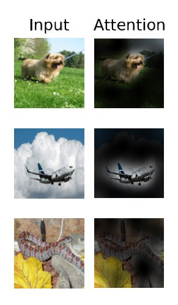
図6：出力トークンから入力空間への注意の代表例。詳細は付録 D.7 を参照のこと。
図中ラベル：Input＝入力、Attention＝注意
自己注意により、ViT は最下層においてさえ画像全体にわたって情報を統合できる。我々は、ネットワークがこの能力をどの程度活用しているかを調べる。具体的には、注意の重みに基づいて、情報が統合される画像空間上の平均距離を計算する（図7、右）。この「注意距離」は、CNN における受容野のサイズに相当する。一部のヘッドはすでに最下層で画像の大部分に注意を向けており、情報を大域的に統合する能力がモデルによって実際に用いられていることがわかる。他の注意ヘッドは、低い層で一貫して小さな注意距離を持つ。このような高度に局所化された注意は、Transformer の前に ResNet を適用するハイブリッドモデルではあまり顕著でなく（図7、右）、これは CNN の初期の畳み込み層と同様の機能を果たしている可能性を示唆する。さらに、注意距離はネットワークの深さとともに増大する。全体として、モデルは分類にとって意味的に関連する画像領域に注意を向けることがわかる（図6）。
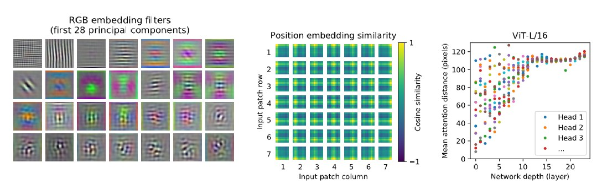
図7：左：ViT-L/32 における RGB 値の初期線形埋め込みのフィルタ。中央：ViT-L/32 の位置埋め込みの類似度。各タイルは、示された行と列のパッチの位置埋め込みと、他のすべてのパッチの位置埋め込みとのコサイン類似度を示す。右：ヘッドおよびネットワークの深さごとの注意対象領域のサイズ。各点は、ある 1 層における 16 個のヘッドのうちの 1 つについて、画像全体で平均した注意距離を示す。詳細は付録 D.7 を参照のこと。
図中ラベル：RGB embedding filters (first 28 principal components)＝RGB 埋め込みフィルタ（上位 28 主成分）、Position embedding similarity＝位置埋め込みの類似度、Input patch row＝入力パッチの行、Input patch column＝入力パッチの列、Cosine similarity＝コサイン類似度、Mean attention distance (pixels)＝平均注意距離（ピクセル）、Network depth (layer)＝ネットワークの深さ（層）、Head 1＝ヘッド 1
Transformer は NLP タスクにおいて目覚ましい性能を示している。しかし、その成功の多くは、優れたスケーラビリティだけでなく、大規模な自己教師あり事前学習にも由来する（Devlin et al., 2019; Radford et al., 2018）。我々も、BERT で用いられたマスク言語モデリングタスクを模倣して、自己教師あり学習のためのマスクパッチ予測（masked patch prediction）について予備的な探究を行う。自己教師あり事前学習により、我々のより小さな ViT-B/16 モデルは ImageNet で 79.9% の精度を達成し、これはゼロからの学習に比べて 2% の大幅な改善であるが、教師あり事前学習にはなお 4% 及ばない。さらなる詳細は付録 B.1.2 に記す。対照学習による事前学習（Chen et al., 2020b; He et al., 2020; Bachman et al., 2019; Hénaff et al., 2020）の探究は今後の課題とする。
我々は、Transformer を画像認識に直接適用することを探究した。コンピュータビジョンにおいて自己注意を用いた先行研究とは異なり、最初のパッチ抽出ステップを除いて、画像に特有の帰納バイアスをアーキテクチャに導入していない。その代わりに、画像をパッチの系列として解釈し、NLP で用いられるのと同じ標準的な Transformer エンコーダで処理する。この単純でありながらスケーラブルな戦略は、大規模データセットでの事前学習と組み合わせると驚くほどうまく機能する。こうして Vision Transformer は、多くの画像分類データセットで最先端に匹敵するかそれを上回り、しかも事前学習のコストは比較的低い。
これらの初期結果は心強いものであるが、多くの課題が残されている。一つは、ViT を検出やセグメンテーションといった他のコンピュータビジョンタスクに適用することである。我々の結果は、Carion et al.（2020）の結果とあわせて、このアプローチの有望性を示している。もう一つの課題は、自己教師あり事前学習手法の探究を続けることである。我々の初期実験では自己教師あり事前学習による改善が見られたが、自己教師ありと大規模な教師あり事前学習との間にはなお大きな差がある。最後に、ViT をさらにスケールさせれば、性能の向上につながる可能性が高い。
本研究はベルリン、チューリッヒ、アムステルダムで行われた。Google の多くの同僚の助力に感謝する。特に、インフラストラクチャとコードのオープンソース公開に決定的な助力をいただいた Andreas Steiner、大規模学習インフラストラクチャについて助力いただいた Joan Puigcerver と Maxim Neumann、有益な議論をいただいた Dmitry Lepikhin、Aravindh Mahendran、Daniel Keysers、Mario Lučić、Noam Shazeer、Ashish Vaswani、Colin Raffel に感謝する。
参考文献は原文のまま掲載した。
| モデル | データセット | エポック数 | 基本学習率 | 学習率減衰 | 重み減衰 | ドロップアウト |
|---|---|---|---|---|---|---|
| ViT-B/{16,32} | JFT-300M | 7 | \(8 \cdot 10^{-4}\) | linear | 0.1 | 0.0 |
| ViT-L/32 | JFT-300M | 7 | \(6 \cdot 10^{-4}\) | linear | 0.1 | 0.0 |
| ViT-L/16 | JFT-300M | 7/14 | \(4 \cdot 10^{-4}\) | linear | 0.1 | 0.0 |
| ViT-H/14 | JFT-300M | 14 | \(3 \cdot 10^{-4}\) | linear | 0.1 | 0.0 |
| R50x{1,2} | JFT-300M | 7 | \(10^{-3}\) | linear | 0.1 | 0.0 |
| R101x1 | JFT-300M | 7 | \(8 \cdot 10^{-4}\) | linear | 0.1 | 0.0 |
| R152x{1,2} | JFT-300M | 7 | \(6 \cdot 10^{-4}\) | linear | 0.1 | 0.0 |
| R50+ViT-B/{16,32} | JFT-300M | 7 | \(8 \cdot 10^{-4}\) | linear | 0.1 | 0.0 |
| R50+ViT-L/32 | JFT-300M | 7 | \(2 \cdot 10^{-4}\) | linear | 0.1 | 0.0 |
| R50+ViT-L/16 | JFT-300M | 7/14 | \(4 \cdot 10^{-4}\) | linear | 0.1 | 0.0 |
| ViT-B/{16,32} | ImageNet-21k | 90 | \(10^{-3}\) | linear | 0.03 | 0.1 |
| ViT-L/{16,32} | ImageNet-21k | 30/90 | \(10^{-3}\) | linear | 0.03 | 0.1 |
| ViT-\(*\) | ImageNet | 300 | \(3 \cdot 10^{-3}\) | cosine | 0.3 | 0.1 |
表3：学習のハイパーパラメータ。すべてのモデルは、バッチサイズ 4096、10k ステップの学習率ウォームアップで学習する。ImageNet では、大域ノルム 1 での勾配クリッピングを追加で適用すると有益であることがわかった。学習時の解像度は 224 である。
表中の値：linear＝線形減衰、cosine＝コサイン減衰
標準的な \(\mathbf{qkv}\) 自己注意（SA、Vaswani et al.（2017））は、ニューラルアーキテクチャの一般的な構成要素である。入力系列 \(\mathbf{z} \in \mathbb{R}^{N \times D}\) の各要素について、系列中のすべての値 \(\mathbf{v}\) の重み付き和を計算する。注意の重み \(A_{ij}\) は、系列の 2 つの要素間のペアごとの類似度と、それぞれのクエリ表現 \(\mathbf{q}^i\) およびキー表現 \(\mathbf{k}^j\) に基づく。
\[ [\mathbf{q}, \mathbf{k}, \mathbf{v}] = \mathbf{z} \mathbf{U}_{qkv}, \qquad \mathbf{U}_{qkv} \in \mathbb{R}^{D \times 3 D_h}, \tag{5} \]
\[ A = \mathrm{softmax}\left( \mathbf{q} \mathbf{k}^\top / \sqrt{D_h} \right), \qquad A \in \mathbb{R}^{N \times N}, \tag{6} \]
\[ \mathrm{SA}(\mathbf{z}) = A \mathbf{v}\,. \tag{7} \]
マルチヘッド自己注意（MSA）は SA の拡張であり、「ヘッド」と呼ばれる \(k\) 個の自己注意演算を並列に実行し、それらを連結した出力を射影する。\(k\) を変えたときに計算量とパラメータ数を一定に保つため、\(D_h\)（式 5）は通常 \(D/k\) に設定される。
\[ \mathrm{MSA}(\mathbf{z}) = [\mathrm{SA}_1(z); \mathrm{SA}_2(z); \cdots; \mathrm{SA}_k(z)]\, \mathbf{U}_{msa}, \qquad \mathbf{U}_{msa} \in \mathbb{R}^{k \cdot D_h \times D} \tag{8} \]
表3に、各モデルの学習設定をまとめる。ImageNet 上でモデルをゼロから学習する際には、強い正則化が鍵となることがわかった。ドロップアウトを用いる場合は、qkv 射影を除くすべての全結合層の後と、位置埋め込みをパッチ埋め込みに加えた直後に適用する。ハイブリッドモデルは、対応する ViT とまったく同じ設定で学習する。最後に、すべての学習は解像度 224 で行う。（訳注：原文には “the the qkv-projections” と “the” の重複がある。）
| データセット | ステップ数 | 基本学習率 |
|---|---|---|
| ImageNet | 20 000 | {0.003, 0.01, 0.03, 0.06} |
| CIFAR100 | 10 000 | {0.001, 0.003, 0.01, 0.03} |
| CIFAR10 | 10 000 | {0.001, 0.003, 0.01, 0.03} |
| Oxford-IIIT Pets | 500 | {0.001, 0.003, 0.01, 0.03} |
| Oxford Flowers-102 | 500 | {0.001, 0.003, 0.01, 0.03} |
| VTAB (19 tasks) | 2 500 | 0.01 |
表4：ファインチューニングのハイパーパラメータ。すべてのモデルは、コサイン学習率減衰、バッチサイズ 512、重み減衰なし、大域ノルム 1 での勾配クリッピングでファインチューニングする。特に断りのない限り、ファインチューニング時の解像度は 384 である。
すべての ViT モデルは、モーメンタム 0.9 の SGD を用いてファインチューニングする。学習率について小規模なグリッドサーチを行う（学習率の範囲は表4を参照）。そのために、訓練セットから小さな部分分割（Pets と Flowers では 10%、CIFAR では 2%、ImageNet では 1%）を開発セットとして用い、残りのデータで学習する。最終結果については、訓練セット全体で学習し、それぞれのテストデータで評価する。ResNet とハイブリッドモデルのファインチューニングにはまったく同じ設定を用いるが、唯一の例外として ImageNet では学習率のスイープに 0.06 という値を追加する。さらに、ResNet については Kolesnikov et al.（2020）の設定も実行し、その実行と我々のスイープを通じて最良の結果を選択する。最後に、特に断りのない限り、すべてのファインチューニング実験は解像度 384 で実行する（学習時と異なる解像度でファインチューニングを行うのは一般的な慣行である（Kolesnikov et al., 2020））。
ViT モデルを別のデータセットに転移する際には、ヘッド全体（2 つの線形層）を取り除き、対象データセットで必要なクラス数を出力する、ゼロ初期化した単一の線形層に置き換える。これは、最後の層だけを単純に再初期化するよりも若干頑健であることがわかった。
VTAB については Kolesnikov et al.（2020）のプロトコルに従い、すべてのタスクで同じハイパーパラメータ設定を用いる。学習率 0.01 を用い、2500 ステップ学習する（表4）。この設定は、2 つの学習率と 2 つのスケジュールについて小規模なスイープを行い、200 例の検証セットで最も高い VTAB スコアとなる設定を選択することで決めた。Kolesnikov et al.（2020）で用いられた前処理に従うが、タスク固有の入力解像度は用いない。代わりに、Vision Transformer はすべてのタスクで高解像度（\(384 \times 384\)）から最も恩恵を受けることがわかった。
予備的な自己教師あり実験では、マスクパッチ予測の目的関数を用いる。そのために、パッチ埋め込みの 50% を破損させる。具体的には、その埋め込みを学習可能な [mask] 埋め込みに置き換える（80%）、ランダムな別のパッチ埋め込みに置き換える（10%）、またはそのまま残す（10%）。この設定は、Devlin et al.（2019）が言語に対して用いたものと非常によく似ている。最後に、破損させた各パッチの 3 ビットの平均色（すなわち合計 512 色）を、それぞれのパッチ表現を用いて予測する。
自己教師ありモデルは、JFT 上でバッチサイズ 4096 で 1M ステップ（約 14 エポック）学習した。Adam を用い、基本学習率は \(2 \cdot 10^{-4}\)、ウォームアップは 10k ステップ、学習率はコサイン減衰とした。事前学習の予測目標として、次の設定を試した。1) 平均の 3 ビット色のみを予測する（すなわち 512 色の予測を 1 つ）、2) \(16 \times 16\) パッチを \(4 \times 4\) に縮小したものを 3 ビット色で並列に予測する（すなわち 512 色の予測を 16 個）、3) L2 を用いてパッチ全体を回帰する（すなわち 3 つの RGB チャネルに対する 256 個の回帰）。驚くべきことに、L2 はわずかに劣ったものの、いずれも非常にうまく機能した。少数ショット性能が最良であったため、最終結果は選択肢 1) についてのみ報告する。Devlin et al.（2019）で用いられた 15% の破損率でも実験したが、我々の少数ショット指標ではやはり結果がわずかに劣った。
最後に、我々のマスクパッチ予測の実装では、ImageNet 分類において同程度の性能向上を得るために、それほど膨大な量の事前学習も JFT のような大規模データセットも必要としないことを付記しておく。すなわち、事前学習が 100k ステップを超えると下流性能の伸びが逓減することを観察しており、ImageNet で事前学習した場合にも同程度の向上が見られる。
| 事前学習 | 評価データセット | ViT-B/16 | ViT-B/32 | ViT-L/16 | ViT-L/32 | ViT-H/14 |
|---|---|---|---|---|---|---|
| ImageNet | CIFAR-10 | 98.13 | 97.77 | 97.86 | 97.94 | - |
| CIFAR-100 | 87.13 | 86.31 | 86.35 | 87.07 | - | |
| ImageNet | 77.91 | 73.38 | 76.53 | 71.16 | - | |
| ImageNet ReaL | 83.57 | 79.56 | 82.19 | 77.83 | - | |
| Oxford Flowers-102 | 89.49 | 85.43 | 89.66 | 86.36 | - | |
| Oxford-IIIT-Pets | 93.81 | 92.04 | 93.64 | 91.35 | - | |
| ImageNet-21k | CIFAR-10 | 98.95 | 98.79 | 99.16 | 99.13 | 99.27 |
| CIFAR-100 | 91.67 | 91.97 | 93.44 | 93.04 | 93.82 | |
| ImageNet | 83.97 | 81.28 | 85.15 | 80.99 | 85.13 | |
| ImageNet ReaL | 88.35 | 86.63 | 88.40 | 85.65 | 88.70 | |
| Oxford Flowers-102 | 99.38 | 99.11 | 99.61 | 99.19 | 99.51 | |
| Oxford-IIIT-Pets | 94.43 | 93.02 | 94.73 | 93.09 | 94.82 | |
| JFT-300M | CIFAR-10 | 99.00 | 98.61 | 99.38 | 99.19 | 99.50 |
| CIFAR-100 | 91.87 | 90.49 | 94.04 | 92.52 | 94.55 | |
| ImageNet | 84.15 | 80.73 | 87.12 | 84.37 | 88.04 | |
| ImageNet ReaL | 88.85 | 86.27 | 89.99 | 88.28 | 90.33 | |
| Oxford Flowers-102 | 99.56 | 99.27 | 99.56 | 99.45 | 99.68 | |
| Oxford-IIIT-Pets | 95.80 | 93.40 | 97.11 | 95.83 | 97.56 |
表5：ImageNet、ImageNet-21k、または JFT300M で事前学習した場合の、さまざまなデータセットにおける Vision Transformer の Top1 精度（%）。これらの値は本文の図3に対応する。モデルは解像度 384 でファインチューニングしている。ImageNet の結果は、表2の結果を得るために用いた追加の手法（Polyak 平均化と解像度 512 の画像）を用いずに計算していることに注意されたい。
（訳注：原表には列見出しのない左 2 列があり、1 列目が事前学習データセット、2 列目が評価データセットである。見出しは訳者が補った。）
| 名称 | エポック数 | ImageNet | ImageNet ReaL | CIFAR-10 | CIFAR-100 | Pets | Flowers | exaFLOPs |
|---|---|---|---|---|---|---|---|---|
| ViT-B/32 | 7 | 80.73 | 86.27 | 98.61 | 90.49 | 93.40 | 99.27 | 55 |
| ViT-B/16 | 7 | 84.15 | 88.85 | 99.00 | 91.87 | 95.80 | 99.56 | 224 |
| ViT-L/32 | 7 | 84.37 | 88.28 | 99.19 | 92.52 | 95.83 | 99.45 | 196 |
| ViT-L/16 | 7 | 86.30 | 89.43 | 99.38 | 93.46 | 96.81 | 99.66 | 783 |
| ViT-L/16 | 14 | 87.12 | 89.99 | 99.38 | 94.04 | 97.11 | 99.56 | 1567 |
| ViT-H/14 | 14 | 88.08 | 90.36 | 99.50 | 94.71 | 97.11 | 99.71 | 4262 |
| ResNet50x1 | 7 | 77.54 | 84.56 | 97.67 | 86.07 | 91.11 | 94.26 | 50 |
| ResNet50x2 | 7 | 82.12 | 87.94 | 98.29 | 89.20 | 93.43 | 97.02 | 199 |
| ResNet101x1 | 7 | 80.67 | 87.07 | 98.48 | 89.17 | 94.08 | 95.95 | 96 |
| ResNet152x1 | 7 | 81.88 | 87.96 | 98.82 | 90.22 | 94.17 | 96.94 | 141 |
| ResNet152x2 | 7 | 84.97 | 89.69 | 99.06 | 92.05 | 95.37 | 98.62 | 563 |
| ResNet152x2 | 14 | 85.56 | 89.89 | 99.24 | 91.92 | 95.75 | 98.75 | 1126 |
| ResNet200x3 | 14 | 87.22 | 90.15 | 99.34 | 93.53 | 96.32 | 99.04 | 3306 |
| R50x1+ViT-B/32 | 7 | 84.90 | 89.15 | 99.01 | 92.24 | 95.75 | 99.46 | 106 |
| R50x1+ViT-B/16 | 7 | 85.58 | 89.65 | 99.14 | 92.63 | 96.65 | 99.40 | 274 |
| R50x1+ViT-L/32 | 7 | 85.68 | 89.04 | 99.24 | 92.93 | 96.97 | 99.43 | 246 |
| R50x1+ViT-L/16 | 7 | 86.60 | 89.72 | 99.18 | 93.64 | 97.03 | 99.40 | 859 |
| R50x1+ViT-L/16 | 14 | 87.12 | 89.76 | 99.31 | 93.89 | 97.36 | 99.11 | 1668 |
表6：モデルのスケーリング実験の詳細な結果。これらは本論文の図5に対応する。いくつかのデータセットにおける転移精度と、事前学習の計算量（exaFLOPs 単位）を示す。
論文中で示した図に対応する詳細な結果を報告する。表5は本論文の図3に対応し、サイズが大きくなっていくデータセット、すなわち ImageNet、ImageNet-21k、JFT-300M で事前学習したさまざまな ViT モデルの転移性能を示す。表6は本論文の図5に対応し、さまざまなサイズの ViT、ResNet、ハイブリッドモデルの転移性能と、それらの事前学習の推定計算コストを示す。
| データセット | ResNet50 | ResNet152x2 | ||
|---|---|---|---|---|
| Adam | SGD | Adam | SGD | |
| ImageNet | 77.54 | 78.24 | 84.97 | 84.37 |
| CIFAR10 | 97.67 | 97.46 | 99.06 | 99.07 |
| CIFAR100 | 86.07 | 85.17 | 92.05 | 91.06 |
| Oxford-IIIT Pets | 91.11 | 91.00 | 95.37 | 94.79 |
| Oxford Flowers-102 | 94.26 | 92.06 | 98.62 | 99.32 |
| 平均（Average） | 89.33 | 88.79 | 94.01 | 93.72 |
表7：Adam と SGD で事前学習した ResNet モデルのファインチューニング。
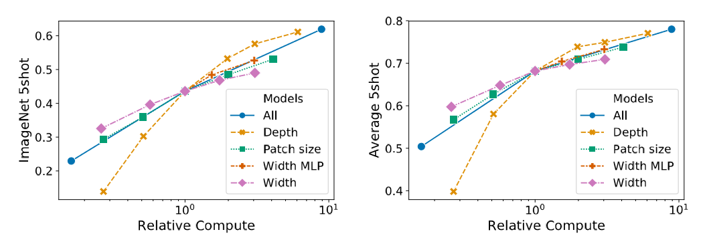
図8：Vision Transformer のさまざまなモデル次元のスケーリング。
図中ラベル：ImageNet 5shot＝ImageNet 5 ショット、Average 5shot＝平均 5 ショット、Relative Compute＝相対計算量、Models＝モデル、All＝全次元、Depth＝深さ、Patch size＝パッチサイズ、Width MLP＝MLP の幅、Width＝幅
ResNet は通常 SGD で学習され、オプティマイザとして Adam を用いるのはかなり型破りである。ここでは、この選択の動機となった実験を示す。すなわち、JFT 上で SGD と Adam により事前学習した 2 つの ResNet（50x1 と 152x2）のファインチューニング性能を比較する。SGD については、Kolesnikov et al.（2020）が推奨するハイパーパラメータを用いる。結果を表7に示す。Adam による事前学習は、ほとんどのデータセットおよび平均において、SGD による事前学習を上回る。このことは、JFT 上で ResNet を事前学習するオプティマイザとして Adam を選択したことを正当化する。なお、我々は 30 エポックではなく 7 エポックしか事前学習していないため、絶対値は Kolesnikov et al.（2020）が報告したものより低いことに注意されたい。
Transformer アーキテクチャのさまざまな次元をスケーリングするアブレーションを行い、非常に大きなモデルへのスケーリングにどれが最も適しているかを調べた。図8は、さまざまな構成について ImageNet での 5 ショット性能を示す。すべての構成は、層数 8、\(D = 1024\)、\(D_{MLP} = 2048\)、パッチサイズ 32 の ViT モデル（すべての線の交点）に基づいている。深さのスケーリングが最も大きな改善をもたらし、その改善は 64 層まではっきりと見られることがわかる。ただし、16 層を過ぎた時点ですでに収穫逓減が見られる。興味深いことに、ネットワークの幅のスケーリングは最も小さな変化しかもたらさないようである。パッチサイズを小さくし、それによって実効的な系列長を長くすると、パラメータを増やすことなく驚くほど頑健な改善が得られる。これらの知見は、パラメータ数よりも計算量のほうが性能のより良い予測指標である可能性、そしてスケーリングするなら幅よりも深さを重視すべきであることを示唆する。全体として、すべての次元を比例的にスケーリングすると頑健な改善が得られることがわかった。
オリジナルの Transformer モデルに可能な限り近づけるため、追加の [class] トークンを用い、これを画像表現とした。このトークンの出力は、単一の隠れ層に非線形性として \(\tanh\) を持つ小さな多層パーセプトロン（MLP）によって、クラス予測へと変換される。
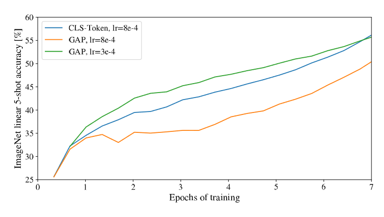
図9：class トークンによる分類器と大域平均プーリングによる分類器の比較。どちらも同程度にうまく機能するが、異なる学習率を必要とする。
図中ラベル：ImageNet linear 5-shot accuracy [%]＝ImageNet 線形 5 ショット精度 [%]、Epochs of training＝学習エポック数、CLS-Token＝CLS トークン、GAP＝大域平均プーリング、lr＝学習率
| 位置埋め込み | Default/Stem（既定／ステム） | Every Layer（全層） | Every Layer-Shared（全層・共有） |
|---|---|---|---|
| 位置埋め込みなし | 0.61382 | N/A | N/A |
| 1 次元位置埋め込み | 0.64206 | 0.63964 | 0.64292 |
| 2 次元位置埋め込み | 0.64001 | 0.64046 | 0.64022 |
| 相対位置埋め込み | 0.64032 | N/A | N/A |
表8：ViT-B/16 モデルを用い、ImageNet 5 ショット線形で評価した位置埋め込みに関するアブレーション研究の結果。
この設計はテキスト向けの Transformer モデルから受け継いだものであり、本論文全体を通じてこれを用いている。画像パッチ埋め込みのみを用い、それらを大域平均プーリング（GAP）したのち線形分類器を適用する（ResNet の最終特徴マップとまったく同様に）という最初の試みは、非常に性能が悪かった。しかし、これは追加のトークンのせいでも GAP 演算のせいでもないことがわかった。そうではなく、性能の差は異なる学習率が必要であることによって完全に説明される。図9を参照のこと。
位置埋め込みを用いて空間情報を符号化するさまざまな方法についてアブレーションを行った。次のケースを試した。
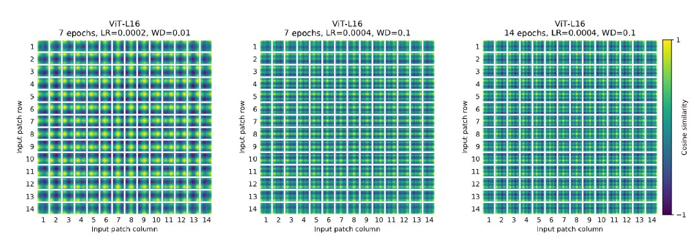
図10：異なるハイパーパラメータで学習したモデルの位置埋め込み。
図中ラベル：ViT-L16, 7 epochs, LR=0.0002, WD=0.01＝ViT-L16、7 エポック、学習率＝0.0002、重み減衰＝0.01（他の 2 枚も同様）、Input patch row＝入力パッチの行、Input patch column＝入力パッチの列、Cosine similarity＝コサイン類似度
空間情報を符号化するさまざまな方法に加えて、この情報をモデルに組み込むさまざまな方法も試した。1 次元および 2 次元の位置埋め込みについては、次の 3 つのケースを試した。(1) モデルのステムの直後、入力を Transformer エンコーダに入れる前に、入力に位置埋め込みを加える（本論文の他のすべての実験における既定）。(2) 各層の冒頭で、位置埋め込みを学習して入力に加える。(3) 各層の冒頭で、学習した位置埋め込み（層間で共有）を入力に加える。
表8に、ViT-B/16 モデルでのこのアブレーション研究の結果をまとめる。見てわかるように、位置埋め込みのないモデルと位置埋め込みのあるモデルとの間には性能に大きな差があるが、位置情報を符号化する方法の違いによる差はほとんど、あるいはまったくない。我々の Transformer エンコーダはピクセルレベルではなくパッチレベルの入力で動作するため、空間情報の符号化方法の違いはそれほど重要でないのだと推測する。より正確に言えば、パッチレベルの入力では、空間次元が元のピクセルレベルの入力よりもはるかに小さく（例えば \(224 \times 224\) に対して \(14 \times 14\)）、この解像度での空間的関係を表現する学習は、これらの異なる位置符号化戦略のいずれにとっても同様に容易である。それでもなお、ネットワークが学習する位置埋め込みの類似度の具体的なパターンは、学習のハイパーパラメータに依存する（図10）。
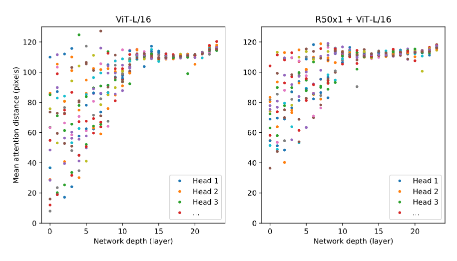
図11：ヘッドおよびネットワークの深さごとの注意対象領域のサイズ。注意距離は、128 枚の例示画像について、クエリピクセルと他のすべてのピクセルとの距離を注意の重みで重み付けして平均することで計算した。各点は、ある 1 層における 16 個のヘッドのうちの 1 つについて、画像全体で平均した注意距離を示す。画像の幅は 224 ピクセルである。
図中ラベル：Mean attention distance (pixels)＝平均注意距離（ピクセル）、Network depth (layer)＝ネットワークの深さ（層）、Head 1＝ヘッド 1
我々は、我々のハードウェア上でのアーキテクチャの実際の速度にも関心がある。これは、レーン幅やキャッシュサイズといった詳細のために、理論上の FLOPs からは必ずしもうまく予測できない。この目的のために、主要な関心対象のモデルについて TPUv3 アクセラレータ上で推論速度の計測を行う。推論と誤差逆伝播の速度の差は、モデルに依存しない一定の係数である。
図12（左）は、さまざまな入力サイズにわたって、1 コアが 1 秒あたりに処理できる画像の枚数を示す。各点は、幅広いバッチサイズにわたって計測したピーク性能を表す。見てわかるように、画像サイズに対する ViT の理論上の 4 乗のスケーリング（bi-quadratic scaling）は、最大の解像度における最大のモデルでようやくわずかに現れ始めるにすぎない。
もう一つの関心のある量は、各モデルが 1 コアに載せられる最大のバッチサイズであり、大きいほど大規模データセットへのスケーリングに有利である。図12（右）は、同じモデル群についてこの量を示す。これにより、大きな ViT モデルが ResNet モデルに対してメモリ効率の点で明確な優位性を持つことがわかる。
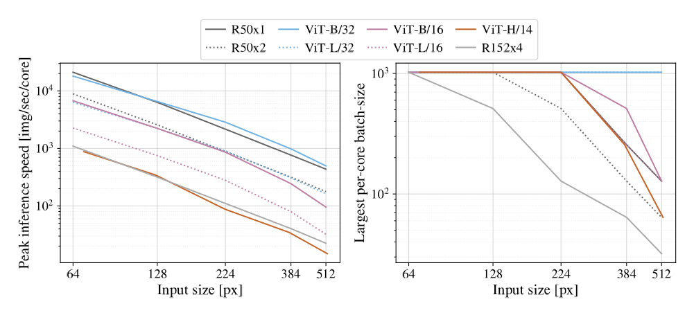
図12：左：入力サイズごとの、さまざまなアーキテクチャの実際の経過時間（ウォールクロック）の計測値。ViT モデルは、同程度の ResNet と同等の速度を持つ。右：入力サイズごとの、さまざまなアーキテクチャでデバイスに収まるコアあたり最大のバッチサイズ。ViT モデルは明らかにメモリ効率が高い。
図中ラベル：Peak inference speed [img/sec/core]＝ピーク推論速度 [画像/秒/コア]、Largest per-core batch-size＝コアあたり最大バッチサイズ、Input size [px]＝入力サイズ [px]
軸方向注意（Axial Attention）（Huang et al., 2020; Ho et al., 2019）は、多次元テンソルとして構成された大きな入力に対して自己注意を実行するための、単純でありながら効果的な手法である。軸方向注意の一般的な考え方は、入力を平坦化したものに 1 次元の注意を適用する代わりに、入力テンソルの単一の軸に沿った注意演算をそれぞれ複数回実行することである。軸方向注意では、各注意は特定の軸に沿って情報を混合し、他の軸に沿った情報は独立に保つ。この方向性に沿って、Wang et al.（2020b）は AxialResNet モデルを提案した。これは、ResNet50 におけるカーネルサイズ \(3 \times 3\) のすべての畳み込みを、相対位置符号化で拡張した軸方向自己注意、すなわち行と列の注意に置き換えたものである。我々は AxialResNet をベースラインモデルとして実装した3。
脚注3：我々の実装は、https://github.com/csrhddlam/axial-deeplab にあるオープンソースの PyTorch 実装に基づいている。我々の実験では、精度の点では（Wang et al., 2020b）で報告されたスコアを再現したが、我々の実装はオープンソースの実装と同様に TPU 上では非常に遅い。そのため、大規模な実験に広く用いることはできなかった。これらは、注意深く最適化された実装によって可能になるかもしれない。
さらに、ViT を、パッチの 1 次元系列の代わりに 2 次元の形状で入力を処理するよう変更し、Axial Transformer ブロックを組み込んだ。このブロックでは、自己注意とそれに続く MLP の代わりに、行方向の自己注意＋MLP と、それに続く列方向の自己注意＋MLP を持つ。
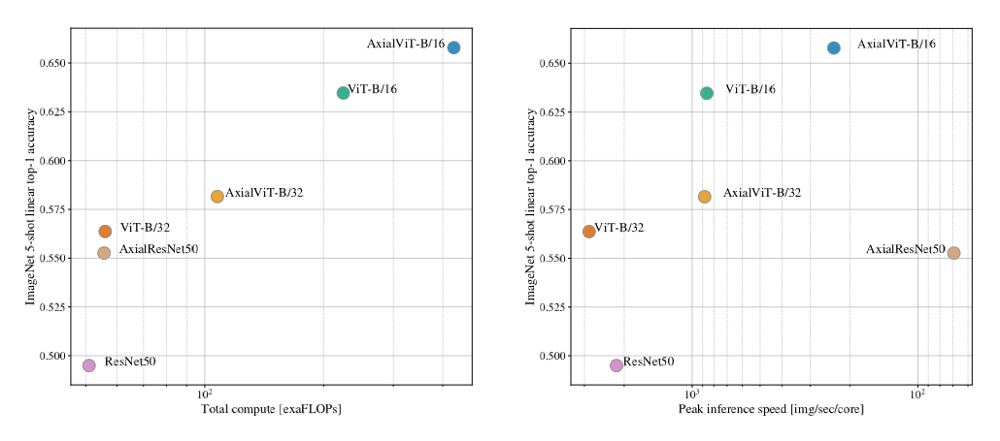
図13：軸方向注意に基づくモデルの性能。ImageNet 5 ショット線形における top-1 精度を、FLOPs 数で表した速度（左）および推論時間で表した速度（左）に対して示す。（訳注：2 つ目の「左」は「右」の誤りと思われる。）
図中ラベル：ImageNet 5-shot linear top-1 accuracy＝ImageNet 5 ショット線形 top-1 精度、Total compute [exaFLOPs]＝総計算量 [exaFLOPs]、Peak inference speed [img/sec/core]＝ピーク推論速度 [画像/秒/コア]
図13は、JFT データセットで事前学習した場合の、ImageNet 5 ショット線形における Axial ResNet、Axial-ViT-B/32、Axial-ViT-B/16 の性能を、FLOPs 数と推論時間（1 秒あたりの例数）の両面での事前学習計算量に対して示している。見てわかるように、Axial-ViT-B/32 と Axial-ViT-B/16 はいずれも、性能の点では対応する ViT-B を上回るが、その代償として計算量が増える。これは、Axial-ViT モデルでは、大域的自己注意を持つ各 Transformer ブロックが、行の自己注意を持つものと列の自己注意を持つものの 2 つの Axial Transformer ブロックに置き換えられており、自己注意が作用する系列長は軸方向の場合のほうが短いものの、Axial-ViT ブロックごとに MLP が 1 つ余分にあるためである。AxialResNet については、精度と計算量のトレードオフの点では妥当に見える（図13、左）ものの、素朴な実装では TPU 上で極めて遅い（図13、右）。
ViT が自己注意を用いて画像全体にわたって情報をどのように統合しているかを理解するために、異なる層において注意の重みが及ぶ平均距離を分析した（図11）。この「注意距離」は、CNN における受容野のサイズに相当する。平均注意距離は下位の層ではヘッド間で大きくばらついており、画像の大部分に注意を向けるヘッドもあれば、クエリ位置またはその近傍の小さな領域に注意を向けるヘッドもある。深さが増すにつれて、すべてのヘッドで注意距離が増大する。ネットワークの後半では、ほとんどのヘッドがトークン全体にわたって広く注意を向ける。
出力トークンから入力空間への注意のマップ（図6および図14）を計算するために、Attention Rollout（Abnar & Zuidema, 2020）を用いた。簡潔に言えば、ViT-L/16 の注意の重みをすべてのヘッドにわたって平均し、すべての層の重み行列を再帰的に掛け合わせた。これにより、すべての層を通じたトークン間の注意の混合が考慮される。
Kolesnikov et al.（2020）の評価設定に従い、我々の主力モデルである ViT-H/14 を ObjectNet ベンチマークでも評価した結果、top-5 精度 82.1%、top-1 精度 61.7% となった。
表9に、VTAB-1k の各タスクで達成されたスコアを示す。
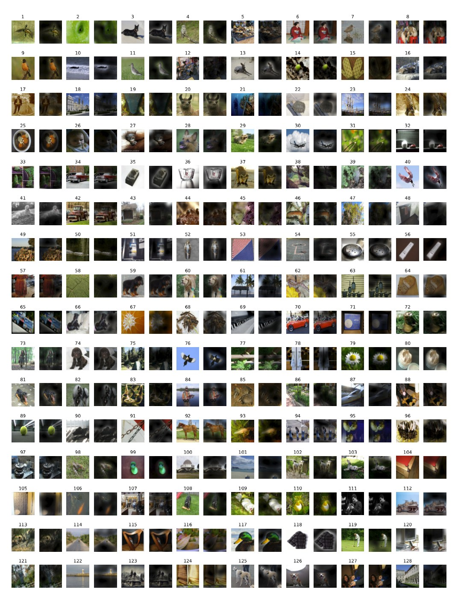
図14：図6と同様の注意マップのさらなる例（ランダムに選択）。
（訳注：各番号について、左が入力画像、右が注意マップである。）
表9：VTAB-1k の性能のタスク別内訳。
| Caltech101 | CIFAR-100 | DTD | Flowers102 | Pets | Sun397 | SVHN | Camelyon | EuroSAT | Resisc45 | Retinopathy | Clevr-Count | Clevr-Dist | DMLab | dSpr-Loc | dSpr-Ori | KITTI-Dist | sNORB-Azim | sNORB-Elev | 平均（Mean） | |
|---|---|---|---|---|---|---|---|---|---|---|---|---|---|---|---|---|---|---|---|---|
| ViT-H/14 (JFT) | 95.3 | 85.5 | 75.2 | 99.7 | 97.2 | 65.0 | 88.9 | 83.3 | 96.7 | 91.4 | 76.6 | 91.7 | 63.8 | 53.1 | 79.4 | 63.3 | 84.5 | 33.2 | 51.2 | 77.6 |
| ViT-L/16 (JFT) | 95.4 | 81.9 | 74.3 | 99.7 | 96.7 | 63.5 | 87.4 | 83.6 | 96.5 | 89.7 | 77.1 | 86.4 | 63.1 | 49.7 | 74.5 | 60.5 | 82.2 | 36.2 | 51.1 | 76.3 |
| ViT-L/16 (I21k) | 90.8 | 84.1 | 74.1 | 99.3 | 92.7 | 61.0 | 80.9 | 82.5 | 95.6 | 85.2 | 75.3 | 70.3 | 56.1 | 41.9 | 74.7 | 64.9 | 79.9 | 30.5 | 41.7 | 72.7 |
（訳注：原表では列見出しに色付きの点が付され、Caltech101〜SVHN の 7 列が赤（Natural）、Camelyon〜Retinopathy の 4 列が緑（Specialized）、Clevr-Count〜sNORB-Elev の 8 列が青（Structured）、Mean が桃色で示されている。原文では表題が表の上に置かれている。）